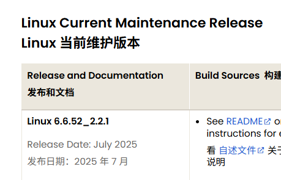
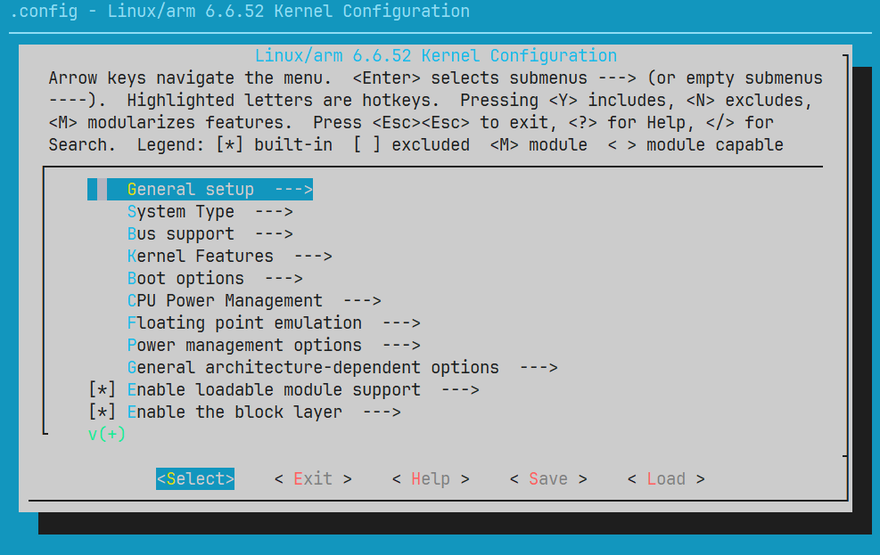
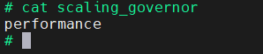
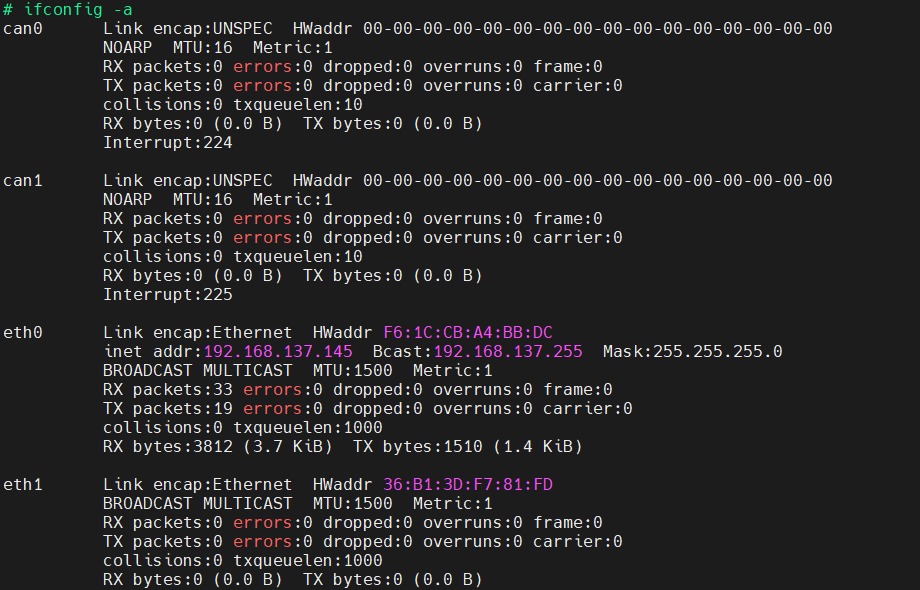
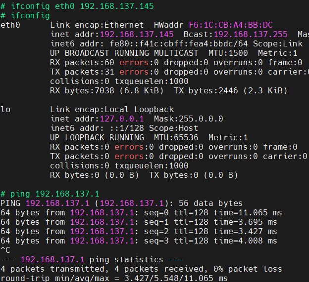

版权信息
warning
本文章为博主原创文章。遵循 CC 4.0 BY-SA 版权协议，转载请附上原文出处链接和本声明。
基于野火 I.MX6ULL S1 Pro 开发板。
1. 获取内核源码
可以看到，截至目前，官方维护版本是：6.6.52_2.2.1 ，因此我们基于此内核构建。

在官方github库中获取源码：
Release lf-6.6.52-2.2.1 · nxp-imx/linux-imx
2. 编译内核源码
我是用的是Arm官方工具链arm-none-linux-gnueabihf：Arm GNU Toolchain Downloads – Arm Developer
和uboot源码编译类似：
make ARCH=arm CROSS_COMPILE=arm-none-linux-gnueabihf- distclean # 清除编译后的文件
make ARCH=arm CROSS_COMPILE=arm-none-linux-gnueabihf- imx_v7_defconfig # 配置文件
make ARCH=arm CROSS_COMPILE=arm-none-linux-gnueabihf- -j10 # 10核编译，首次编译时间比较长
编译完成会生成：
- zImage：压缩的内核镜像，位于
arch/arm/boot/zImage - dtb：设备树文件，位于
arch/arm/boot/dts/nxp/imx/imx6ull-14x14-evk-emmc.dtb
3. 测试：在uboot中启动
请参见——mx6ull开发版移植nxp官方u-boot 3.2节。
启动成功后，如果EMMC中是没有rootfs的，或者指定了错误的块设备或分区，会提示panic，挂载不了rootfs，这是正常的。
我们可以看到启动日志的第二行：
Linux version 6.6.52 (gdm@mDoG)
(arm-none-linux-gnueabihf-gcc (Arm GNU Toolchain 14.3.Rel1 (Build arm-14.174)) 14.3.1 20250623,
GNU ld (Arm GNU Toolchain 14.3.Rel1 (Build arm-14.174)) 2.44.0.20250616)
#1 SMP PREEMPT Fri Oct 31 16:15:58 CST 2025说明这确实是我们编译的内核。
[old]4. 创建自己的dts文件和config文件
2025.11.11更新：第四节的内容已不推荐，不用看了，我现在更倾向直接修改对应的dts文件和defconfig文件，只不过你修改哪个文件，就把哪个文件的官方源文件备份一份，以便恢复。这样简单又方便。
内容已被折叠
4.1. dts
打开 arch/arm/boot/dts/nxp/imx/ ，可以看到许多dts文件，我们以
imx6ull-14x14-evk.dts 为模板创建，为什么不用 imx6ull-14x14-evk-emmc.dts 呢？查看文件 imx6ull-14x14-evk-emmc.dts：
#include "imx6ull-14x14-evk.dts"
&usdhc2 {
pinctrl-names = "default", "state_100mhz", "state_200mhz";
pinctrl-0 = <&pinctrl_usdhc2_8bit>;
pinctrl-1 = <&pinctrl_usdhc2_8bit_100mhz>;
pinctrl-2 = <&pinctrl_usdhc2_8bit_200mhz>;
bus-width = <8>;
non-removable;
status = "okay";
};我们发现其实它只是在 imx6ull-14x14-evk.dts 的基础上加了 usdhc2 的修改。
所以我们只需要将这个 &usdhc2 里的内容复制到 imx6ull-14x14-evk.dts 后面就可以了。
我将自己的配置文件命名为：mx6ull-14x14-evk[gdm-main].dts，表示这是以 imx6ull-14x14-evk.dts 为模板创建的，且是主要文件。因为这个 dts 文件还包含了其他的 dtsi 文件——也就是 dts 的头文件，后续我们如果要修改头文件中的内容，也将头文件复制下来改名作修改，并在 dts 文件中包含这个复制后的头文件，这样可以避免直接修改源文件导致其他的 dts 配置错误（因为头文件不只在一个文件中包含）。
然后打开 arch/arm/boot/dts/nxp/imx/Makefile 添加 mx6ull-14x14-evk[gdm-main].dtb 的make目标。
4.2. defconfig
同理，以 arch/arm/configs/imx_v7_defconfig 为模板创建。
4.3. 编译下载启动
重复本篇第2节、第3节的内容。如果 EMMC 里有 rootfs 并正确配置，则可正常启动
以下为补充部分
5. 主频修改
进入到系统后（我的是buildroot）使用以下命令：
cat /proc/cpuinfo查看cpu信息输出：
processor : 0
model name : ARMv7 Processor rev 5 (v7l)
BogoMIPS : 24.00
Features : half thumb fastmult vfp edsp neon vfpv3 tls vfpv4 idiva idivt vfpd32 lpae
CPU implementer : 0x41
CPU architecture: 7
CPU variant : 0x0
CPU part : 0xc07
CPU revision : 5
Hardware : Freescale i.MX6 Ultralite (Device Tree)
Revision : 0000
Serial : 2f39b9d75d68c574BogoMIPS 这一条，此时 BogoMIPS 为 24.00，BogoMIPS 是 Linux 系统中
衡量处理器运行速度的一个“尺子”，处理器性能越强，主频越高，BogoMIPS 值就越大。
BogoMIPS 只是粗略的计算 CPU 性能，并不十分准确。
我们再来看看如何查看工作频率及相关信息。
进入到目录 /sys/bus/cpu/devices/cpu0/cpufreq:
affected_cpus scaling_cur_freq
cpuinfo_cur_freq scaling_driver
cpuinfo_max_freq scaling_governor
cpuinfo_min_freq scaling_max_freq
cpuinfo_transition_latency scaling_min_freq
related_cpus scaling_setspeed
scaling_available_frequencies stats
scaling_available_governors此目录中记录了 CPU 频率等信息，这些文件的含义如下：
| 目录项 | 描述 |
|---|---|
| cpuinfo_cur_freq | 当前 cpu 工作频率，从 CPU 寄存器读取到的工作频率。 |
| cpuinfo_max_freq | 处理器所能运行的最高工作频率(单位: KHz）。 |
| cpuinfo_min_freq | 处理器所能运行的最低工作频率(单位: KHz）。 |
| cpuinfo_transition_latency | 处理器切换频率所需要的时间(单位:ns)。 |
| scaling_available_frequencies | 处理器支持的主频率列表(单位: KHz）。 |
| scaling_available_governors | 当前内核中支持的所有 governor(调频)类型。 |
| scaling_cur_freq | 保存着 cpufreq 模块缓存的当前 CPU 频率，不会对 CPU 硬件寄存器进行检查。 |
| scaling_driver | 该文件保存当前 CPU 所使用的调频驱动。 |
| scaling_max_freq | governor(调频)可以调节的最高频率。 |
| cpuinfo_min_freq | governor(调频)可以调节的最低频率。 |
此外还有：
-
scaling_governor：governor(调频)策略，Linux 内核一共有 5 中调频策略，
Performance：最高性能，直接用最高频率，不考虑耗电。Interactive：一开始直接用最高频率，然后根据 CPU 负载慢慢降低。Powersave：省电模式，通常以最低频率运行，系统性能会受影响，一般不会用这个！Userspace：可以在用户空间手动调节频率。Ondemand，：定时检查负载，然后根据负载来调节频率。负载低的时候降低 CPU 频率，这样省电，负载高的时候提高 CPU 频率，增加性能。
-
stats 目录下给出了 CPU 各种运行频率的统计情况，比如 CPU 在各频率下的运行时间及变频次数。
使用命令查看各参数的值：
cat [目录项]会发现当前调度模式是 Ondemand。
如果我想让我们的板子一直满血运行，怎么做？我们只需图形化配置defconfig文件。
进入到 kernel 源码目录，使用命令打开图形化配置文件：
make menuconfig
进入 CPU Power Management-> CPU Frequency scaling-> Default CPUFreq governor ，选择performance，再次编译（不用distclean清理），再传进开发板。
再次查看就可以发现：

当然日常使用还是 Ondemand 更好，所以我还是换回 Ondemand 了。
至此，我们以修改主频为引，介绍了如何调试修改配置文件并应用修改。
–end–
6. 系统网络测试
野火的板子PHY芯片使用的和nxp官方的一样，因此直接适配nxp官方linux内核，不用修改设备树文件，所以这里讲一下网络测试。
进入到系统后，默认是没有启用任何一个网络驱动设备的，使用 ifconfig 命令可能只会显示一个“loc”。所以我们输入命令查看所有的网络驱动设备：
ifconfig -a输出：

我通过MAC地址分辨出我应该启用的是 eth0 它正通过网线连接着我的电脑，输入命令：
ifconfig eth0 up启用后，我们通过 ifconfig 命令就能查看到这个设备了。但是这个网卡都还没
有 IP 地址，所以不能进行 ping 等操作。
所以我们为其分配 ip 地址：
ifconfig eth0 192.168.137.145现在就能 ping 通我的电脑了。
我的电脑以太网卡 ip 地址为 192.168.137.1：
